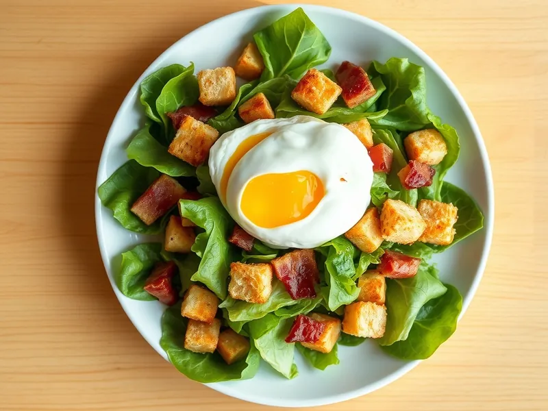

Фото: Иллюстрация ИИ, Cloudflare Workers AI
Лионский салат с беконом и яйцом пашот
Французский салат из листьев, хрустящего бекона, гренок и яйца с жидким желтком
25 мин2 порц.582 ккал на порциюБ 25 · Ж 45 · У 19Европейская кухня
Открыть в приложении: порции, таймеры, список покупок
Продукты на 2 порц.
- Салат листовой150 г
- Бекон120 г
- Яйцо куриное2 шт
- Хлеб белый2 шт
- Оливковое масло1,5 ст. л.
- Уксус 9%1,5 ст. л.
- Горчица1 ч. л.
- Лук репчатый0,3 шт
- Перец чёрный молотыйпо вкусу
Как готовить
- Нарежьте бекон брусочками, хлеб кубиками. Обжарьте бекон на сухой сковороде на среднем огне 5 минут до хруста, выньте.
- В вытопленном жире обжарьте хлеб 3-4 минуты до золотистого цвета.
- Сделайте заправку: смешайте оливковое масло, 1 ч. л. уксуса, горчицу и мелко нарезанный лук.
- Доведите воду до слабого кипения, добавьте остальной уксус. Разбейте яйцо в чашку, закрутите воду воронкой и вылейте яйцо в центр. Варите 3 минуты, пока белок не схватится, а желток останется мягким. Так же сварите второе яйцо.
- Перемешайте листья с заправкой, беконом и гренками, разложите на тарелки, сверху положите яйцо пашот и поперчите.
Совет. Для пашота берите самые свежие яйца: у них белок плотный и не растекается. Если не получается, сварите яйца в мешочек 6 минут.